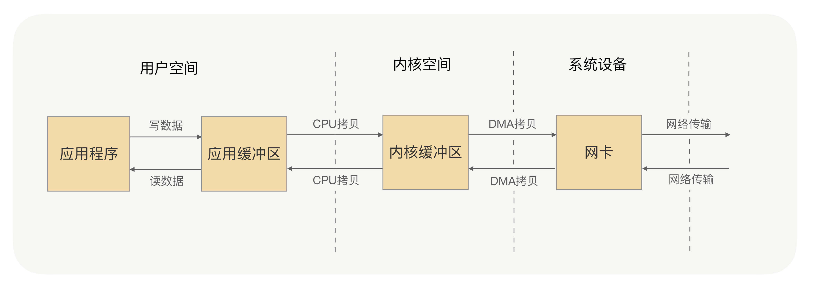
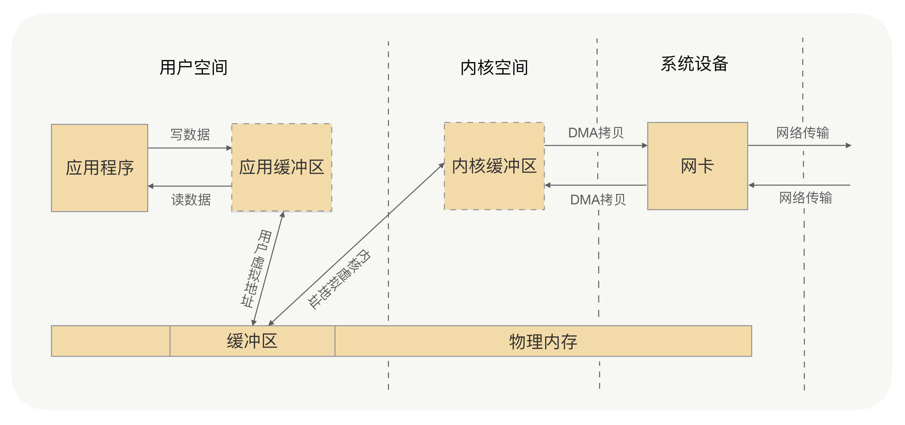

- 00 开篇词 别老想着怎么用好RPC框架，你得多花时间琢磨原理.md.html
- 01 核心原理：能否画张图解释下RPC的通信流程？.md.html
- 02 协议：怎么设计可扩展且向后兼容的协议？.md.html
- 03 序列化：对象怎么在网络中传输？.md.html
- 04 网络通信：RPC框架在网络通信上更倾向于哪种网络IO模型？.md.html
- 05 动态代理：面向接口编程，屏蔽RPC处理流程.md.html
- 06 RPC实战：剖析gRPC源码，动手实现一个完整的RPC.md.html
- 07 架构设计：设计一个灵活的RPC框架.md.html
- 08 服务发现：到底是要CP还是AP？.md.html
- 09 健康检测：这个节点都挂了，为啥还要疯狂发请求？.md.html
- 10 路由策略：怎么让请求按照设定的规则发到不同的节点上？.md.html
- 11 负载均衡：节点负载差距这么大，为什么收到的流量还一样？.md.html
- 12 异常重试：在约定时间内安全可靠地重试.md.html
- 13 优雅关闭：如何避免服务停机带来的业务损失？.md.html
- 14 优雅启动：如何避免流量打到没有启动完成的节点？.md.html
- 15 熔断限流：业务如何实现自我保护_.md.html
- 16 业务分组：如何隔离流量？.md.html
- 17 异步RPC：压榨单机吞吐量.md.html
- 18 安全体系：如何建立可靠的安全体系？.md.html
- 19 分布式环境下如何快速定位问题？.md.html
- 20 详解时钟轮在RPC中的应用.md.html
- 21 流量回放：保障业务技术升级的神器.md.html
- 22 动态分组：超高效实现秒级扩缩容.md.html
- 23 如何在没有接口的情况下进行RPC调用？.md.html
- 24 如何在线上环境里兼容多种RPC协议？.md.html
- 加餐 RPC框架代码实例详解.md.html
- 加餐 谈谈我所经历过的RPC.md.html
- 答疑课堂 基础篇与进阶篇思考题答案合集.md.html
- 结束语 学会从优秀项目的源代码中挖掘知识.md.html
- 捐赠
04 网络通信：RPC框架在网络通信上更倾向于哪种网络IO模型？
你好，我是何小锋。在上一讲我讲解了RPC框架中的序列化，通过上一讲，我们知道由于网络传输的数据都是二进制数据，所以我们要传递对象，就必须将对象进行序列化，而RPC框架在序列化的选择上，我们更关注序列化协议的安全性、通用性、兼容性，其次才关注序列化协议的性能、效率、空间开销。承接上一讲，这一讲，我要专门讲解下RPC框架中的网络通信，这也是我们在开篇词中就强调过的重要内容。
那么网络通信在RPC调用中起到什么作用呢？
我在[第 01 讲] 中讲过，RPC是解决进程间通信的一种方式。一次RPC调用，本质就是服务消费者与服务提供者间的一次网络信息交换的过程。服务调用者通过网络IO发送一条请求消息，服务提供者接收并解析，处理完相关的业务逻辑之后，再发送一条响应消息给服务调用者，服务调用者接收并解析响应消息，处理完相关的响应逻辑，一次RPC调用便结束了。可以说，网络通信是整个RPC调用流程的基础。
常见的网络IO模型
那说到网络通信，就不得不提一下网络IO模型。为什么要讲网络IO模型呢？因为所谓的两台PC机之间的网络通信，实际上就是两台PC机对网络IO的操作。
常见的网络IO模型分为四种：同步阻塞IO（BIO）、同步非阻塞IO（NIO）、IO多路复用和异步非阻塞IO（AIO）。在这四种IO模型中，只有AIO为异步IO，其他都是同步IO。
其中，最常用的就是同步阻塞IO和IO多路复用，这一点通过了解它们的机制，你会get到。至于其他两种IO模型，因为不常用，则不作为本讲的重点，有兴趣的话我们可以在留言区中讨论。
阻塞IO（blocking IO）
同步阻塞IO是最简单、最常见的IO模型，在Linux中，默认情况下所有的socket都是blocking的，先看下操作流程。
首先，应用进程发起IO系统调用后，应用进程被阻塞，转到内核空间处理。之后，内核开始等待数据，等待到数据之后，再将内核中的数据拷贝到用户内存中，整个IO处理完毕后返回进程。最后应用的进程解除阻塞状态，运行业务逻辑。
这里我们可以看到，系统内核处理IO操作分为两个阶段——等待数据和拷贝数据。而在这两个阶段中，应用进程中IO操作的线程会一直都处于阻塞状态，如果是基于Java多线程开发，那么每一个IO操作都要占用线程，直至IO操作结束。
这个流程就好比我们去餐厅吃饭，我们到达餐厅，向服务员点餐，之后要一直在餐厅等待后厨将菜做好，然后服务员会将菜端给我们，我们才能享用。
IO多路复用（IO multiplexing）
多路复用IO是在高并发场景中使用最为广泛的一种IO模型，如Java的NIO、Redis、Nginx的底层实现就是此类IO模型的应用，经典的Reactor模式也是基于此类IO模型。
那么什么是IO多路复用呢？通过字面上的理解，多路就是指多个通道，也就是多个网络连接的IO，而复用就是指多个通道复用在一个复用器上。
多个网络连接的IO可以注册到一个复用器（select）上，当用户进程调用了select，那么整个进程会被阻塞。同时，内核会“监视”所有select负责的socket，当任何一个socket中的数据准备好了，select就会返回。这个时候用户进程再调用read操作，将数据从内核中拷贝到用户进程。
这里我们可以看到，当用户进程发起了select调用，进程会被阻塞，当发现该select负责的socket有准备好的数据时才返回，之后才发起一次read，整个流程要比阻塞IO要复杂，似乎也更浪费性能。但它最大的优势在于，用户可以在一个线程内同时处理多个socket的IO请求。用户可以注册多个socket，然后不断地调用select读取被激活的socket，即可达到在同一个线程内同时处理多个IO请求的目的。而在同步阻塞模型中，必须通过多线程的方式才能达到这个目的。
同样好比我们去餐厅吃饭，这次我们是几个人一起去的，我们专门留了一个人在餐厅排号等位，其他人就去逛街了，等排号的朋友通知我们可以吃饭了，我们就直接去享用了。
为什么说阻塞IO和IO多路复用最为常用？
了解完二者的机制，我们就可以回到起初的问题了——我为什么说阻塞IO和IO多路复用最为常用。对比这四种网络IO模型：阻塞IO、非阻塞IO、IO多路复用、异步IO。实际在网络IO的应用上，需要的是系统内核的支持以及编程语言的支持。
在系统内核的支持上，现在大多数系统内核都会支持阻塞IO、非阻塞IO和IO多路复用，但像信号驱动IO、异步IO，只有高版本的Linux系统内核才会支持。
在编程语言上，无论C++还是Java，在高性能的网络编程框架的编写上，大多数都是基于Reactor模式，其中最为典型的便是Java的Netty框架，而Reactor模式是基于IO多路复用的。当然，在非高并发场景下，同步阻塞IO是最为常见的。
综合来讲，在这四种常用的IO模型中，应用最多的、系统内核与编程语言支持最为完善的，便是阻塞IO和IO多路复用。这两种IO模型，已经可以满足绝大多数网络IO的应用场景。
RPC框架在网络通信上倾向选择哪种网络IO模型？
讲完了这两种最常用的网络IO模型，我们可以看看它们都适合什么样的场景。
IO多路复用更适合高并发的场景，可以用较少的进程（线程）处理较多的socket的IO请求，但使用难度比较高。当然高级的编程语言支持得还是比较好的，比如Java语言有很多的开源框架对Java原生API做了封装，如Netty框架，使用非常简便；而GO语言，语言本身对IO多路复用的封装就已经很简洁了。
而阻塞IO与IO多路复用相比，阻塞IO每处理一个socket的IO请求都会阻塞进程（线程），但使用难度较低。在并发量较低、业务逻辑只需要同步进行IO操作的场景下，阻塞IO已经满足了需求，并且不需要发起select调用，开销上还要比IO多路复用低。
RPC调用在大多数的情况下，是一个高并发调用的场景，考虑到系统内核的支持、编程语言的支持以及IO模型本身的特点，在RPC框架的实现中，在网络通信的处理上，我们会选择IO多路复用的方式。开发语言的网络通信框架的选型上，我们最优的选择是基于Reactor模式实现的框架，如Java语言，首选的框架便是Netty框架（Java还有很多其他NIO框架，但目前Netty应用得最为广泛），并且在Linux环境下，也要开启epoll来提升系统性能（Windows环境下是无法开启epoll的，因为系统内核不支持）。
了解完以上内容，我们可以继续看这样一个关键问题——零拷贝。在我们应用的过程中，他是非常重要的。
什么是零拷贝？
刚才讲阻塞IO的时候我讲到，系统内核处理IO操作分为两个阶段——等待数据和拷贝数据。等待数据，就是系统内核在等待网卡接收到数据后，把数据写到内核中；而拷贝数据，就是系统内核在获取到数据后，将数据拷贝到用户进程的空间中。以下是具体流程：

应用进程的每一次写操作，都会把数据写到用户空间的缓冲区中，再由CPU将数据拷贝到系统内核的缓冲区中，之后再由DMA将这份数据拷贝到网卡中，最后由网卡发送出去。这里我们可以看到，一次写操作数据要拷贝两次才能通过网卡发送出去，而用户进程的读操作则是将整个流程反过来，数据同样会拷贝两次才能让应用程序读取到数据。
应用进程的一次完整的读写操作，都需要在用户空间与内核空间中来回拷贝，并且每一次拷贝，都需要CPU进行一次上下文切换（由用户进程切换到系统内核，或由系统内核切换到用户进程），这样是不是很浪费CPU和性能呢？那有没有什么方式，可以减少进程间的数据拷贝，提高数据传输的效率呢？
这时我们就需要零拷贝（Zero-copy）技术。
所谓的零拷贝，就是取消用户空间与内核空间之间的数据拷贝操作，应用进程每一次的读写操作，都可以通过一种方式，让应用进程向用户空间写入或者读取数据，就如同直接向内核空间写入或者读取数据一样，再通过DMA将内核中的数据拷贝到网卡，或将网卡中的数据copy到内核。
那怎么做到零拷贝？你想一下是不是用户空间与内核空间都将数据写到一个地方，就不需要拷贝了？此时你有没有想到虚拟内存？

零拷贝有两种解决方式，分别是 mmap+write 方式和 sendfile 方式，mmap+write方式的核心原理就是通过虚拟内存来解决的。这两种实现方式都不难，市面上可查阅的资料也很多，在此就不详述了，有问题，可以在留言区中解决。
Netty中的零拷贝
了解完零拷贝，我们再看看Netty中的零拷贝。
我刚才讲到，RPC框架在网络通信框架的选型上，我们最优的选择是基于Reactor模式实现的框架，如Java语言，首选的便是Netty框架。那么Netty框架是否也有零拷贝机制呢？Netty框架中的零拷贝和我之前讲的零拷贝又有什么不同呢？
刚才我讲的零拷贝是操作系统层面上的零拷贝，主要目标是避免用户空间与内核空间之间的数据拷贝操作，可以提升CPU的利用率。
而Netty的零拷贝则不大一样，他完全站在了用户空间上，也就是JVM上，它的零拷贝主要是偏向于数据操作的优化上。
那么Netty这么做的意义是什么呢？
回想下[第 02 讲]，在这一讲中我讲解了RPC框架如何去设计协议，其中我讲到：在传输过程中，RPC并不会把请求参数的所有二进制数据整体一下子发送到对端机器上，中间可能会拆分成好几个数据包，也可能会合并其他请求的数据包，所以消息都需要有边界。那么一端的机器收到消息之后，就需要对数据包进行处理，根据边界对数据包进行分割和合并，最终获得一条完整的消息。
那收到消息后，对数据包的分割和合并，是在用户空间完成，还是在内核空间完成的呢？
当然是在用户空间，因为对数据包的处理工作都是由应用程序来处理的，那么这里有没有可能存在数据的拷贝操作？可能会存在，当然不是在用户空间与内核空间之间的拷贝，是用户空间内部内存中的拷贝处理操作。Netty的零拷贝就是为了解决这个问题，在用户空间对数据操作进行优化。
那么Netty是怎么对数据操作进行优化的呢？
- Netty 提供了 CompositeByteBuf 类，它可以将多个 ByteBuf 合并为一个逻辑上的 ByteBuf，避免了各个 ByteBuf 之间的拷贝。
- ByteBuf 支持 slice 操作，因此可以将 ByteBuf 分解为多个共享同一个存储区域的 ByteBuf，避免了内存的拷贝。
- 通过 wrap 操作，我们可以将 byte[] 数组、ByteBuf、ByteBuffer 等包装成一个 Netty ByteBuf 对象, 进而避免拷贝操作。
Netty框架中很多内部的ChannelHandler实现类，都是通过CompositeByteBuf、slice、wrap操作来处理TCP传输中的拆包与粘包问题的。
那么Netty有没有解决用户空间与内核空间之间的数据拷贝问题的方法呢？
Netty 的 ByteBuffer 可以采用 Direct Buffers，使用堆外直接内存进行Socket的读写操作，最终的效果与我刚才讲解的虚拟内存所实现的效果是一样的。
Netty 还提供 FileRegion 中包装 NIO 的 FileChannel.transferTo() 方法实现了零拷贝，这与Linux 中的 sendfile 方式在原理上也是一样的。
总结
今天我们详细地介绍了阻塞IO与IO多路复用，拓展了零拷贝相关的知识以及Netty框架中的零拷贝。
考虑到系统内核的支持、编程语言的支持以及IO模型本身的特点，RPC框架在网络通信的处理上，我们更倾向选择IO多路复用的方式。
零拷贝带来的好处就是避免没必要的CPU拷贝，让CPU解脱出来去做其他的事，同时也减少了CPU在用户空间与内核空间之间的上下文切换，从而提升了网络通信效率与应用程序的整体性能。
而Netty的零拷贝与操作系统的零拷贝是有些区别的，Netty的零拷贝偏向于用户空间中对数据操作的优化，这对处理TCP传输中的拆包粘包问题有着重要的意义，对应用程序处理请求数据与返回数据也有重要的意义。
在 RPC框架的开发与使用过程中，我们要深入了解网络通信相关的原理知识，尽量做到零拷贝，如使用Netty框架；我们要合理使用ByteBuf子类，做到完全零拷贝，提升RPC框架的整体性能。
课后思考
回想一下，你所接触的开源中间件框架有哪些框架在网络通信上做到了零拷贝？都是使用哪种方式实现的零拷贝？
欢迎留言和我分享你的思考和疑惑，也欢迎你把文章分享给你的朋友，邀请他加入学习。我们下节课再见！
© 2019 - 2023 Liangliang Lee. Powered by gin and hexo-theme-book.